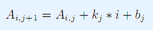
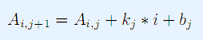

小C有一个N行M列矩阵A。
小P挑衅小C：就你这智商，能告诉我每一行的最小值是什么吗？
小C不服：垃圾
可是小C真不会，于是他找到了你
由于A可能很大，这个矩阵用一个特殊的方式加密了

| F.A.Qs | Home | Discuss | ProblemSet | Status | Ranklist | Contest | 入门OJ | ModifyUser Xeonacid | Logout | 捐赠本站 |
|---|
小C有一个N行M列矩阵A。
小P挑衅小C：就你这智商，能告诉我每一行的最小值是什么吗？
小C不服：垃圾
可是小C真不会，于是他找到了你
由于A可能很大，这个矩阵用一个特殊的方式加密了

第一行两个整数N,M。
接下来一行N个数，第i个数表示Ai,1
接下来M-1行，每行两个整数，第i行表示ki,bi
输出N行，每行一个整数。第i行的整数表示第i行的最小值。
1<=N，M<=2*10^5
｜Ki|<=100,|Bi|<=10^7,|Ai,1|<=10^12